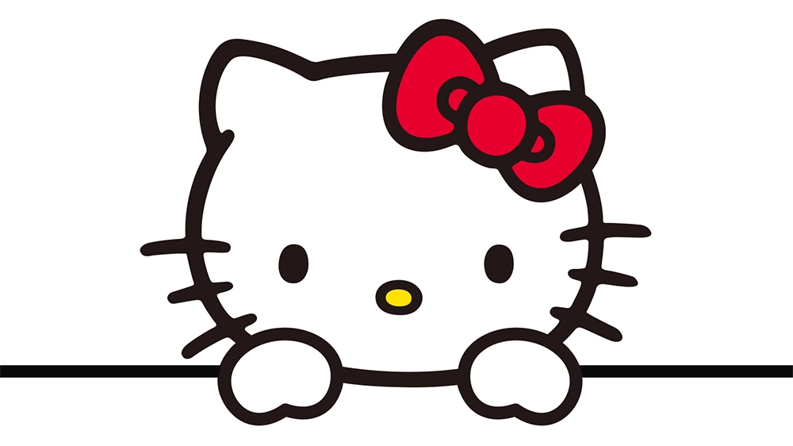

HELLO KITTY WORLD
SANRIO, HISTÓRIA
A Sanrio Company, é uma empresa japonesa que projeta, licencia e produz produtos com foco no segmento kawaii ("fofo") da cultura popular japonesa.
Seus produtos incluem artigos de papelaria, material escolar, presentes e acessórios que são vendidos em todo o mundo, inclusive em lojas de varejo de marcas especializadas no Japão.
A personagem mais conhecida da Sanrio é a Hello Kitty, uma gatinha de desenho animado, e uma das marcas de marketing mais bem sucedidas do mundo.
Além de vender produtos de personagens, a Sanrio participa da produção e edição de filmes.
Eles possuem os direitos dos personagens Mr. Men e os direitos de licenciamento japonês dos personagens Peanuts.
Seu ramo de animatrônicos, chamado Kokoro Company, Ltd. (kokoro sendo japonês para 'coração') é mais conhecido pelo andróide Actroid.
A empresa também administra uma franquia da KFC na província de Saitama.
CRIADORES
A Hello Kitty foi criada originalmente pela designer da Sanrio, Yuko Shimizu, em 1974.
A segunda designer, Setsuko Yonekubo, assumiu por cinco anos até 1980, quando essa tarefa foi dada a Yuko Yamaguchi, que ainda está à frente do trabalho.
A primeira aparição da personagem em um item foi uma bolsa de moedas de vinil no Japão, onde ela foi retratada sentada entre uma garrafa de leite e um aquário.
A Sanrio decidiu fazer Hello Kitty britânica porque, na época de sua criação, os países estrangeiros, em particular a Grã-Bretanha, eram modernos no Japão.
A Sanrio já tinha vários personagens ambientados nos EUA e queria que a Hello Kitty fosse diferente.